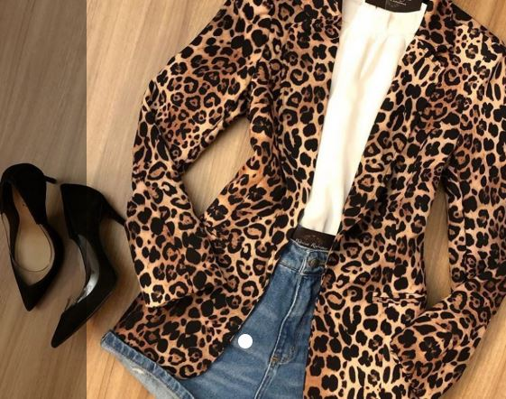
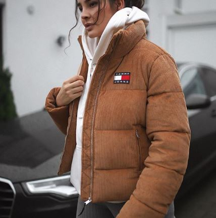
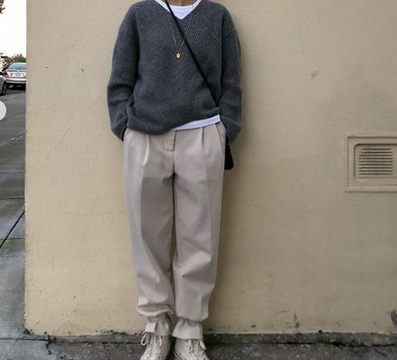
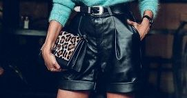
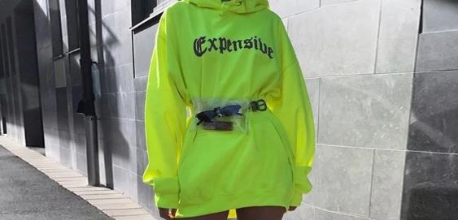
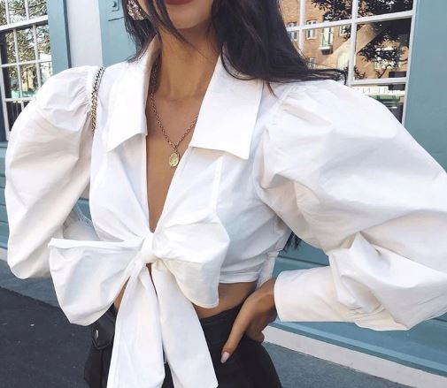

1. Animal Instincts
This season, street style stars let their animal instincts take over with bold and wild prints. In particular, loud leopard print was a favourite amongst the fashionistas and appeared on a variety of garments, including pants, coats, dresses, suits, and more. To follow the lead of these chic ladies and unleash your own inner jungle cat, choose strong and striking designs with bold and bright colours. Alternatively, consider an all-over leopard print look with matching separates or a dress/jumpsuit. You can even add a leopard print bag or shoes if you’re feeling playful.
The Trend Spotter

2. Puffer jacket
In a battle against the cold in coats, I am team puffer jacket. They're super lightweight and provide the kind of warmness you feel only when a hot cup of apple cider is in your hands. There was a time when these practical coats were seen as unsightly creations that made you look, and possibly waddle, like a penguin. But the style has gained a new found fame this season, with brands offering up colorful and printed iterations of the originals. I found some of these most fashionable puffers for winter, ahead. Your spirit animal this season is none other than the adorable penguin. Rock it.
Marie Claire

3. Creature comforts
Comfort is key. This is everything you want to wear when the temperature plummets (or you’re sat beneath Baltic office air con). Forget hygge, and its ‘cabin in the woods’ comfort. This is off-duty chic for the on-the-go woman: she wants minimal fuss, to get ready quickly with simple separates in sumptuous fabrics. The Look: a warm, tonal palette of grey, white and beige. You’ll want to wear soft wool or cashmere knits and track pants, with a swaddling coat in faux fur or shearling.
Elle UK

4. Leather
It’s an all year round fabric now which means a must have for your closet. From skirts, dresses, leggings you can’t go wrong with this trend and it’s also why it’s not saying goodbye any time soon.
Monique Loveless

5. Neon
Neon Brights are paving the way into 2019. Neon greens, pinks and purples were all the rage across the runways this season. Add this trend as a purse, hat or shoes if neon is too overwhelming for you.
Whitney Wanders

6. Puff Sleeves
Pump up the volume! First brought back from the fashion dead by Emanuel Ungaro, this trend quickly was seen everywhere from Carolina Herrera to Anrealage. Pair a puff sleeve top with your favorite straight leg denim and flats for an elevated weekend look or a pair of trousers and pumps for a unique look at the office.
Shanna Battle
